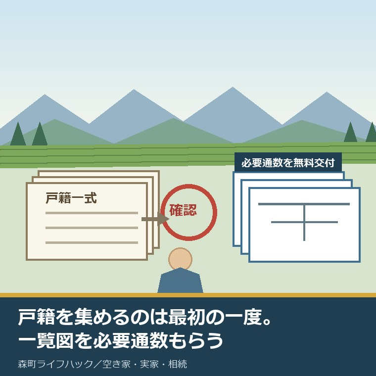
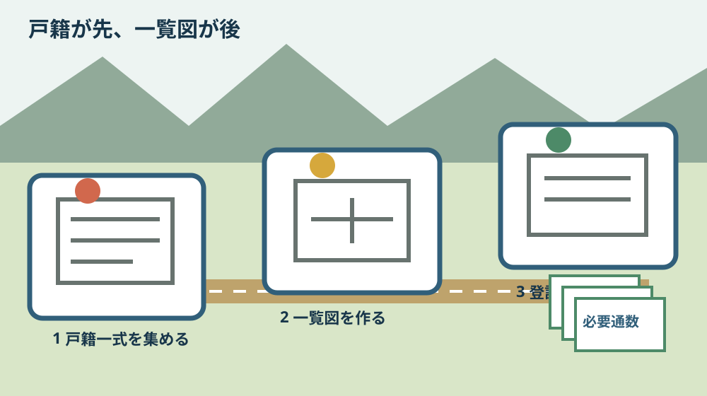
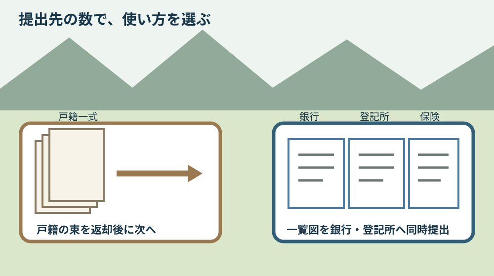

法定相続情報一覧図と戸籍｜森町の実家手続を比較

この記事の要点
Q. 戸籍の束と法定相続情報一覧図は、何が違うのですか。
A. 一覧図は戸籍を集めなくてよい制度ではありません。最初に出生から死亡までの戸籍一式を集め、法務局の確認を受けます。その後は必要通数の一覧図を無料で受け取り、銀行や登記所へ同時に出せます。戸籍代と郵送料は別にかかります。
森町の実家を相続し、銀行、法務局、保険会社へ手続きを出す。そこで何度も出てくるのが戸籍です。窓口ごとに束を預け、返却を待ち、次へ回す。法定相続情報一覧図は、その繰り返しを減らすための書類です。
ただし、呼び名が長いため誤解されやすい。一覧図を作れば戸籍を取らなくてよい、という制度ではありません。戸籍一式を最初に集めるところは同じです。
この記事では、法務局が2026年3月1日に改訂した「法定相続情報証明制度の手続の3STEP」の資料と、森町の戸籍請求案内を2026年9月1日に確認しました。
個別の相続人の範囲、相続放棄、遺産分割、登記や税務の判断は、この記事だけでは決められません。ここで扱うのは、書類の役割と集める順番です。
結論は「戸籍が先、一覧図が後」
法務局の資料は手続きを3段階で示しています。STEP1が必要書類の収集、STEP2が法定相続情報一覧図の作成、STEP3が申出書を記入して登記所へ提出、です。
STEP1には、被相続人の出生から死亡まで連続した戸除籍謄本が含まれます。被相続人の住民票除票、相続人全員の現在の戸籍謄本または抄本、申出人の住所と氏名を確認できる公的書類も必要です。
相続人全員の現在戸籍は、被相続人が亡くなった日以後の証明日であるものを用意します。亡くなる前に取った戸籍を、そのまま相続人全員の現在戸籍として使う順番ではありません。
STEP2では、集めた戸籍の内容をもとに、相続関係を一覧にした図を申出人が作成します。法務局が家系図を一から作ってくれる仕組みではありません。
STEP3で、申出書、STEP1の書類、自作した法定相続情報一覧図を登記所へ出します。登記官が内容を確認し、認証文付きの一覧図の写しを交付します。
戸籍は根拠資料で、一覧図は確認後に複数の相続手続へ出しやすくした写しです。先と後を逆に考えないことが、いちばん大きな違いです。

2026年3月1日改訂で確認できる無料の範囲
法務局の資料表紙には「令和8年3月1日改訂」とあります。西暦では2026年3月1日です。資料は「法定相続情報一覧図の写し（無料で必要な通数を交付）」と明記しています。
3ページには「一覧図の写しは、相続手続に必要な通数を交付します」とあります。4ページには「相続手続に必要な限度の通数をお求めください」と書かれています。
無料だから好きな枚数を無制限にもらう、という読み方ではありません。銀行2行、登記1件、保険1件なら、提出先と返却の有無を先に聞き、必要な限度を申出書へ書きます。
制度の利用自体は無料です。ただし法務局の資料は、戸籍謄本の取得には所定の手数料がかかると明記しています。郵送による申出や一覧図交付にも、所定の郵送料が必要です。
無料になるのは法務局での制度利用と一覧図の写しであり、戸籍集め全体が0円になるわけではありません。ここが費用比較の境目です。
森町で戸籍を取る費用と郵送の中身
森町の「戸籍謄本・戸籍抄本等の申請」は2026年7月15日更新です。戸籍謄本・戸籍抄本は1通450円、除籍と改製原戸籍は1通750円、戸籍附票は1通300円と案内されています。
出生から死亡まで何通になるかは、人によって違います。転籍、婚姻、法改正による改製などで戸籍が分かれるためです。必要通数をこの記事で固定しません。
森町の郵送請求では、請求書、本人確認書類の写し、定額小為替、返信用封筒が基本です。必要に応じて親族関係が分かる戸籍の写しや委任状も添えます。
定額小為替は郵便局で購入します。森町の案内は、お釣りが出ないよう手数料分を用意するよう示しています。返信用封筒には住所と氏名を書き、切手を貼ります。
送付先は〒437-0293 静岡県周智郡森町森2101番地の1、森町役場住民生活課住民係です。遠方の相続人が帰省日に窓口を一度で終えられない場合、郵送請求を先に使えます。
出生から死亡までを請求するときは、その範囲が分かるように書きます。個別の親族関係によって追加資料が必要になるため、投函前に住民生活課住民係へ確認するほうが確実です。
親の証明書を子が取るときの委任状、本人確認、広域交付、郵送の違いは、実家の証明書を、子が代わりに取る——委任状と本人確認書類を帰省前にそろえるで詳しく整理しています。
一覧図の申出先は4つから選べる
法定相続情報証明制度の申出先は、被相続人の本籍地、被相続人の最後の住所地、申出人の住所地、被相続人名義の不動産所在地のいずれかを管轄する登記所です。
森町の実家があるから、必ず一つの決まった登記所へ行く、とだけ覚えないでください。申出人が遠方に住む場合は、申出人住所地の管轄を選べる余地があります。
申出と交付は郵送でも可能です。帰省と法務局訪問を同じ日に詰め込まず、戸籍の不足確認や一覧図作成に時間を残せます。
どの登記所が自分の住所や不動産を管轄するかは、法務局の案内で確認します。支局名を推測で書かず、申出前に所在地と受付を照合してください。
提出した戸籍などは確認後に返却されます。委任関係の書類は原則返却されませんが、所定の方法で原本とコピーを併記して提出すると原本返却を受けられる場合があります。
一覧図は登記所で5年間保管され、その間は再交付を申し出られます。最初の交付時に必要通数を数えるのが基本ですが、後から新しい手続きが見つかった場合の道も残ります。
一覧図に住所を書くかは任意
法務局の資料によると、法定相続情報一覧図へ相続人の住所を書くかは任意です。住所を記載する場合は、各相続人の住民票の写しを用意します。
住民票の写しの代わりに、印鑑証明書や戸籍附票を使える場合もあります。誰の住所を記載するか、必要書類を一覧図作成前に分けます。
住所を書けば提出先で別の書類を減らせる可能性があります。一方、相続人全員の住民票などを集める作業が増えます。提出先が住所記載を必要とするかを先に聞くのが順番です。
続柄の書き方にも注意があります。法務局の資料は、続柄を「子」などと記載した一覧図が、相続税の申告などで利用できない場合があると案内しています。
銀行で使えるから税務でも同じ、と一括りにはできません。一覧図以外の必要書類は提出機関ごとに異なります。法務局の資料も、各提出先へ確認するよう案内しています。
相続放棄と一覧図を混同しない
意外なのは、相続放棄をした相続人も法定相続情報一覧図へ記載されることです。法務局の資料は、この扱いを注意事項として明記しています。
一覧図に名前があることと、最終的に遺産を取得することは同じではありません。一覧図は戸籍から確認した法定相続関係を表す書類で、遺産分割の結論を書いた書類ではないからです。
一方、推定相続人が廃除された場合は一覧図へ記載しないと案内されています。このような個別事情がある場合は、自分だけで図を確定せず、法務局や司法書士へ確認してください。
遺産分割協議書、相続放棄申述受理通知書、遺言書など、一覧図とは役割の違う書類が必要になる場面があります。一覧図一枚で相続の全手続が終わるわけではありません。
森町の実家手続で比較する
戸籍の束だけで進める方法は、準備が単純です。集めた戸籍一式を一つの窓口へ出し、返却されたら次へ回します。提出先が一つか二つで、急がない場合には、この方法でも足ります。
一覧図を使う方法は、最初に図を作り、法務局の確認を受ける作業が増えます。その代わり、必要通数の写しを同時に用意し、複数の銀行や登記所へ並行して出しやすくなります。
| 比べる点 | 戸籍の束 | 法定相続情報一覧図 |
|---|---|---|
| 最初の戸籍収集 | 必要 | 必要 |
| 作成・確認 | 請求した証明書をそのまま使う | 申出人が図を作り、登記所が確認 |
| 交付費用 | 森町の戸籍等は1通ごと有料 | 必要通数の写しは無料 |
| 向く場面 | 提出先が少なく、順番に進める | 銀行・登記所など複数先へ並行提出 |
| 注意 | 返却待ちで次が止まる場合がある | 一覧図以外の書類は提出先ごとに確認 |
どちらが得かは、戸籍の枚数だけでは決まりません。提出先の数、原本返却の時期、郵送日数、家族が動ける日、手続きの期限を並べて決めます。
実家の土地を数える作業は別に残ります。課税明細だけで全筆が分からない場合は、親の土地は課税明細だけでは数え切れない——名寄帳を相続人が取り、実家の筆をすべて並べるへ進んでください。
死亡後の窓口と期限を一枚に置きたい方は、家族が亡くなった後の手続きは、期限と窓口を一枚にまとめるが先です。そこへ「戸籍一式」「一覧図の必要通数」を追記します。
良い点：戸籍一式を何度も動かさずに済む
良い点は、必要通数を無料で受け取れることです。銀行や保険会社の手続きが重なる家族は、戸籍一式の返却待ちを減らし、同じ週に複数先へ出せます。
申出先を4つの基準から選べることも実用的です。被相続人の本籍地や最後の住所地だけでなく、申出人住所地と不動産所在地の管轄も選択肢になります。
郵送申出と郵送交付が可能な点は、森町から離れて暮らす相続人の移動負担を減らします。平日の移動、交通費、窓口待ちを一回分減らせる可能性があります。
提出した戸籍が返却され、一覧図が5年間保管されることも安心材料です。次の手続きが後から見つかっても、保管期間内なら再交付の道があります。
注文したい点：無料という言葉だけでは順番が見えない
その上で注文したい点があります。「無料で必要な通数」と大きく書かれると、戸籍の取得費用まで無料になったように読めます。実際には戸籍代と郵送料が別に必要です。
図の作成も申出人側の作業です。戸籍の文字、旧字体、婚姻や転籍のつながりを読み、自分で一覧にします。家族関係が複雑な場合、無料だから手間も小さいとは限りません。
提出先ごとの追加書類も残ります。銀行の所定用紙、本人確認、印鑑証明、遺産分割協議書などは、一覧図に置き換わらない場合があります。
森町の戸籍案内と法務局の制度案内は別のサイトです。戸籍を取るところから一覧図の申出まで、遠方相続人が一本でたどれる町側の案内は、2026年9月1日時点で確認できませんでした。
町の窓口にも、戸籍を請求する家族の説明負担があります。出生から死亡までの範囲、親族関係、委任の有無を一件ずつ確認しています。その努力を認めたうえで、一覧図へ進む人向けの短い導線があると、双方の聞き直しを減らせます。

対案・結論：今日、提出先を数える
今日できる小さな一歩は、戸籍を取ることではなく、提出先を数えることです。銀行、証券、保険、法務局、年金など、連絡が必要な相手を一枚へ書きます。
各提出先へ「法定相続情報一覧図を使えるか」「原本は返るか」「ほかに何が要るか」を聞きます。回答日と担当窓口を一行で残します。
一覧図を使える先が複数あり、手続きを並行したいなら申出を検討します。一つずつ進めても期限に間に合うなら、戸籍の束を回す方法を残してもかまいません。
手続きを急ぐために、戸籍を何通も買う必要はありません。まず提出先と必要通数を数え、一覧図を使うか決める。私はこの順番を勧めます。
申出する場合は、被相続人の出生から死亡までの戸除籍、住民票除票、相続人全員の現在戸籍、申出人の本人確認書類を基本箱にします。個別事情があれば追加書類を法務局へ確認します。
郵送する前に、申出先の管轄、返信用封筒、郵送料、原本返却の方法を確認します。封筒を投函した日、追跡番号、同封物の写しも家族の記録へ残します。
家族に残す記録
記録には、亡くなった方の氏名、本籍、最後の住所、死亡日を分けて書きます。本籍と最後の住所が同じとは限りません。森町の実家住所だけで出生から死亡までの戸籍をたどれるとは限りません。
集めた戸籍は、自治体名、証明書名、対象期間、発行日、通数、手数料を一覧にします。どの期間がつながっているかを見れば、同じ証明書の重複請求を減らせます。
提出先の表には、必要通数、一覧図利用の可否、戸籍原本の返却、追加書類、期限、発送日、完了日を書きます。家族が別々に動く場合も、同じ表を使います。
法定相続情報番号、交付日、交付通数、使用先、残り通数、再交付の有無も残します。一覧図だけを保管し、どこへ出したか分からなくなる状態を避けます。
実家の不動産は、所在地、地番、家屋番号、名義、固定資産税の通知、登記情報を別欄にします。戸籍がそろっても、土地と建物の特定が終わったことにはなりません。
大石の視点
ここからは、大石浩之（磐田市／不動産業）としての意見です。体験台帳にこの制度を使った一人称の実例はないため、経験した出来事としては書きません。
私は、まだ実家を売ると決めていないご家族にも、提出先と戸籍の範囲だけは先に数えてよいと考えています。売却の判断と、相続人を確認する作業は別です。
一覧図を作るかも、今日決め切る必要はありません。提出先が一つなのか五つなのかが分かれば、戸籍の束を回すか、一覧図を必要通数もらうかを比較できます。
私が避けたいのは、「無料らしいから」と図を作り始め、提出先では別の書類が要ると後から知ることです。制度を使うこと自体を目的にせず、家族の移動と郵送を減らす道具として選びます。
森町の実家相続では、戸籍の次に名寄帳、登記、農地、道路、残置物、維持費が続きます。相続人の確認だけで家の整理が完了したとは考えません。
決断を急がせず、確認済みの事実を一つ増やす。提出先を数えた一枚は、売る、貸す、残すのどの選択にも使えます。
まとめ
法定相続情報一覧図は、戸籍集めを省く書類ではありません。最初に戸籍一式を集め、自分で図を作り、登記所へ申し出ます。
2026年3月1日改訂の法務局資料では、制度利用と必要限度の一覧図交付は無料です。戸籍取得手数料と郵送料は別にかかります。
今日の一歩は、提出先を一枚に並べることです。一覧図の利用可否と必要通数を聞いてから、戸籍の束で進むか一覧図を使うか決めてください。
よくある質問
Q1. 法定相続情報一覧図があれば、戸籍を集めなくてよいですか。
A1. いいえ。最初に被相続人の出生から死亡まで連続した戸除籍謄本、被相続人の住民票除票、相続人全員の現在戸籍などを集めます。その書類と自作した一覧図を登記所へ提出し、確認後に一覧図の写しが交付されます。一覧図は最初の戸籍集めを省くものではなく、その後の複数窓口で束を出し直す負担を減らすものです。
Q2. 法定相続情報一覧図の交付は本当に無料ですか。
A2. 法務局の2026年3月1日改訂資料には、本制度は無料で、相続手続に必要な限度の通数を交付するとあります。ただし戸籍謄本の取得手数料と、郵送で申出・交付を受ける場合の郵送料は別にかかります。森町では戸籍謄抄本450円、除籍・改製原戸籍750円、戸籍附票300円です。
Q3. 森町の実家相続では、どの登記所へ申し出ますか。
A3. 申出先は一つに固定されません。被相続人の本籍地、最後の住所地、申出人の住所地、被相続人名義の不動産所在地のいずれかを管轄する登記所を選べます。申出と一覧図の交付は郵送でも可能です。どの登記所が管轄するか、必要書類が個別事情で増えないかは、提出前に法務局へ確認してください。
制度、手数料、必要書類は変わる場合があります。相続人の範囲、相続放棄、登記、税務、遺産分割などの個別判断は、法務局、司法書士、弁護士、税理士などの専門家へ確認してください。
参考にした公式情報
- あなたの相続手続を応援します！ 法定相続情報証明制度の手続の3STEP／法務局（2026年3月1日改訂、4ページ。必要書類、申出先、無料の範囲、必要通数、郵送、5年間保管、住所記載、相続放棄などを2026年9月1日に確認）
- 戸籍謄本・戸籍抄本等の申請／静岡県森町（戸籍謄抄本450円、除籍・改製原戸籍750円、戸籍附票300円、請求要件、本人確認、委任状を2026年9月1日に確認。更新日2026年7月15日）
- 戸籍等の郵送請求／静岡県森町（請求書、本人確認書類、定額小為替、返信用封筒、親族関係資料または委任状、送付先を2026年9月1日に確認。更新日2024年8月2日）

磐田市で小さな不動産業を営みながら、森町の空き家・農地・実家じまいのご相談を受けています。地域と不動産実務をつなぐ目線で、確認の順番まで具体的に書きます。
最終確認日：2026-09-01 ／ 本記事は公表情報と執筆者の見解を分けて記載しています。法定相続情報一覧図の利用可否と追加書類は提出先ごとに異なります。個別の相続・登記・税務判断は専門家へご確認ください。